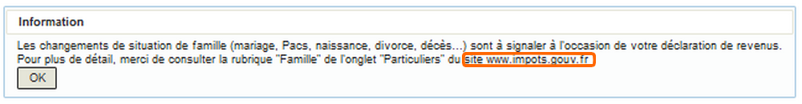
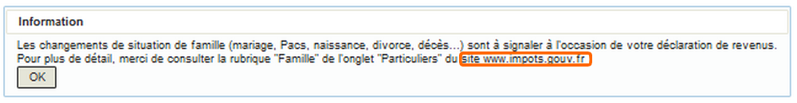
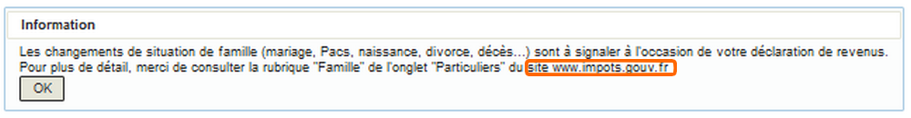

Un message d'information invite l'usager à consulter l'événement de vie « Signaler mes changements de situation » du segment de population « Particulier » du site impots.gouv.fr pour plus d'informations.
 
